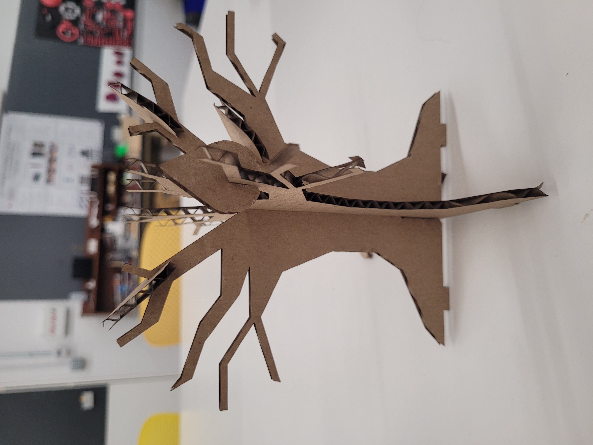
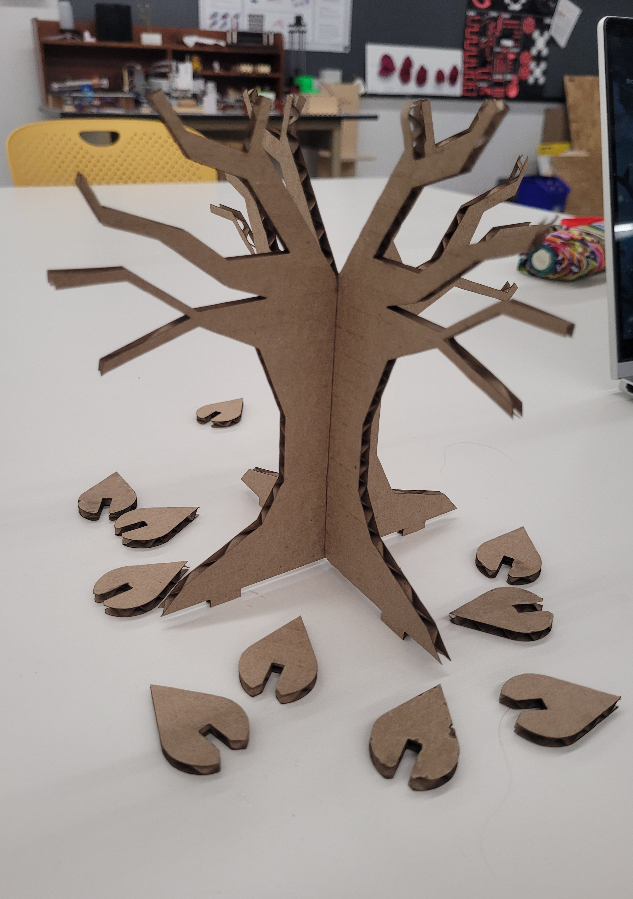
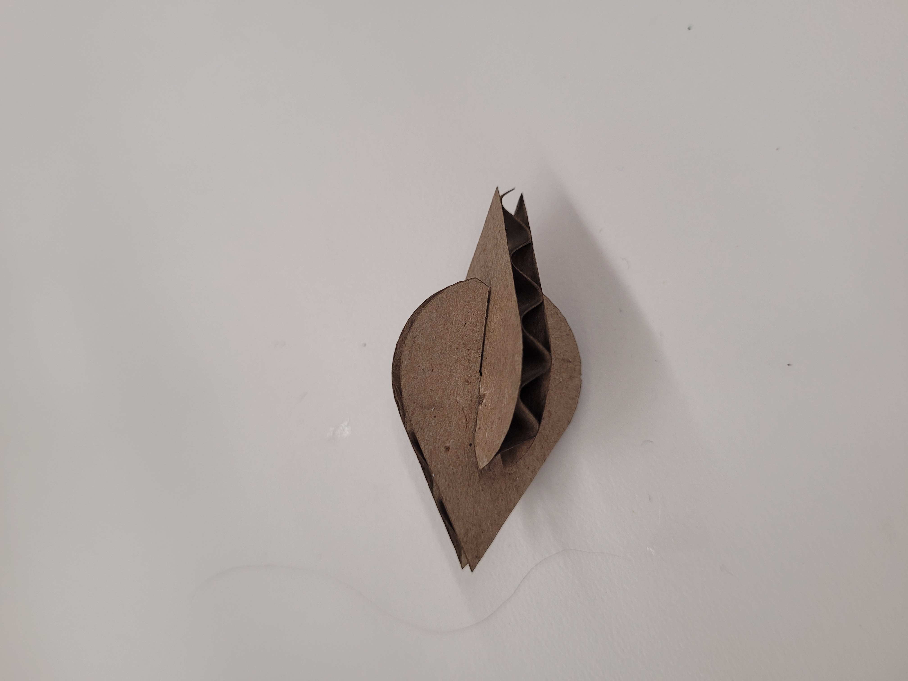

<br>
## Week 2: 2D design and cutting
### Press Fit:
For this press-fit assignment, I designed pieces that would come together and make a tree.
First I opened Fusion360 and made a new project document. After that, I started inputting line lengths and circle diameters from my hand-drawn design.
<img src="week 2 tree.PNG" width="205" height="120">
When I was finished I right-clicked on my sketch and exported it as DXF to my USB drive. After that, I laser cut it out and put the finished pieces together.
  
### 3D Household Objects:
For the 3D modeling part of the assignment, I started to modele a perfume bottle. I started by measuring the lengths of all sides and for the rounded parts I measured the diameters. Once I inputted all of these things into Fusion360 I had a couple of seperate cylinder shapes.
With the move/copy tool I stacked them all on top of each other and added a hole on the toppest one. Now that the 3D shape was completed I modified the appearance of the bottle into glass and kept the top of the bottle metal.
<img src="week 2 perfume.PNG" width="720" height="620">
Next I made a wooden for. First I inputed the general shape of it using the lengths of the sides and diameters of the round parts. After that I went back over it and added the measurements of the prongs on the forks. I trimmed away the lines that I didn't need and ended up with a good fork shape. After that I extruded the shape by 2 mm. Now that it was a 3D fork I changed it's appearance and made it a cherry wood.
<img src="week 2 wooden fork.PNG" width="720" height="620">